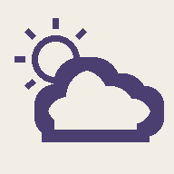

Himmel · Wetter · Vorhersage
Wetter, Umweltbelastung und Abendrot-Vorschau für deinen Standort
Standort wird benötigt, um aktuelle Wetterdaten zu laden.
Regenwahrscheinlichkeit, nächste Stunden
Wetterdaten von Open-Meteo.com (CC BY 4.0)
Die nächsten 6 Tage